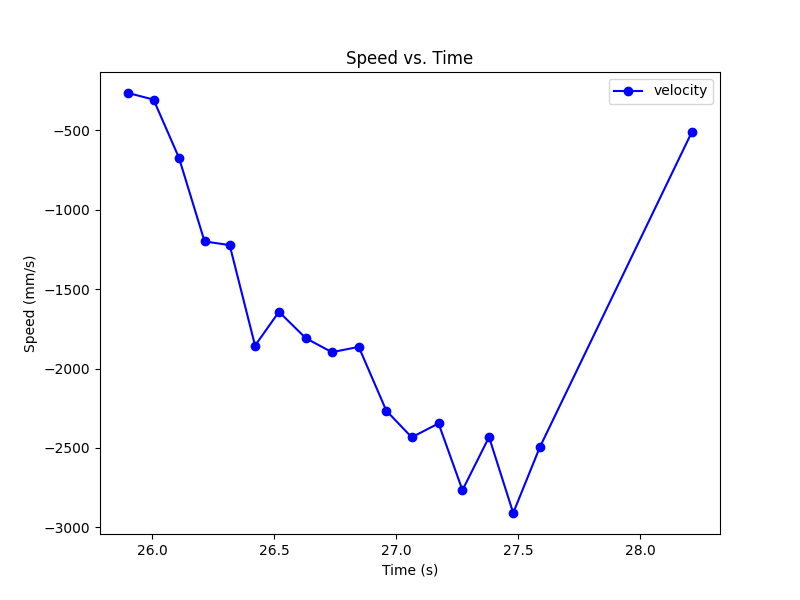

The goal of this lab is to implement a Kalman Filter on the RC car. The goal is execute state prediction faster and thus have a more accurate state estimate.
Since our control input is the PWM signal for the motors, we must find the drag and mass in terms of those units. We do this by driving our RC car at a wall and estimating the velocity. Below are the graphs of our best qualitative trial:
To find the drag, we divide our control input, u, by the max velocity. Our control input value is the percentage of the max input we used. Our input range is 55 to 255, so with an input of 175, u = 60%. We estimate our max velocity to be the max (absolute) velocity we recorded which is 2909.09 mm/sec.
From this, we get that our drag = 0.6 / 2909.09 = 0.00021.
To estimate the mass, we need to find the time where the car reaches 90% of the max velocity. This would be an absolute velocity of 2618 mm/sec. We plotted the 90% rise time to find the time elapsed to reach that speed.
This yields a delta t of roughly 1.3secs. Using this we can solve for mass = -drag * t / ln(0.1) = 0.00012.
Using the drag and mass, we calculated the A, B, and C matricies and discretized them for our sensor data.
Our delta_t was very small because I used the run of data where we interpolated the sensor readings. This delta_t should be 0.127 for data without interpolation.
We had to set our covariances for our kalman filter as well. Sigma_u represents our uncertainty with our model and Sigma_z represents our uncertainty with our sensor readings. We set our sigma_u values to be smaller than expected because it is correlated with our sampling time. Since our sampling time is so short for the run of data we are testing, we must use a smaller sigma_u. The chosen values were done experimentally to balance using the model and the sensor readings while being within an expected variance of 20 mm for the sensor reading and 40 mm for the model.
We implemented the kalman filter in python on a set of data from the car driving up to a wall and stopping 1 foot away. The implementation followed the code given in the lab document and simply used the discretized A and B arrays. From running the filter with the above sigmas, we got this result:
We see that the filter performed pretty well compared to the data. This suggests that the filter is functional. We did further tests with different sigma values to see how the filter performed when there was high sensor uncertainty(low model uncertainty) and high model uncertainty(low sensor uncertainty).
We see that with high sensor uncertainty, the model dominates the distance prediction which is very different from the actual readings. Conversely, if we have high model uncertainty, the sensor readings dominate and the predictions converge to the sensor readings.